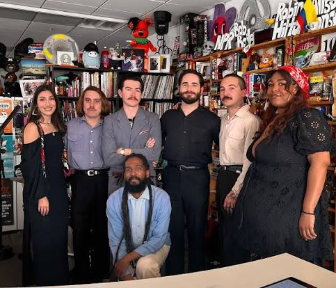

Thee Sacred Souls: Tiny Desk Set
Genre: Soul/R&B
Category: Tiny Desk Set

Thee Sacred Souls are a soul/R&B band that has been around for a while. They have a unique sound that is a mix of soul, R&B, and funk. They have a great live show and are worth checking out if you get the chance!
I especially like their Tiny Desk Set, as it is a fantasti representation of their skills and crowdwork.